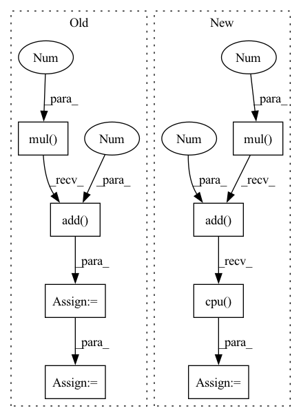

Pattern ID :18058
Before Change
if not os.path.exists(self.image_save_path):
os.makedirs(self.image_save_path)
best_fake_images = best_fake_images.mul(0.5).add(0.5 ) .squeeze().cpu()
worst_fake_images = worst_fake_images.mul(0.5).add(0.5).squeeze().cpu()
best_image_grid = utils.make_grid(best_fake_images, nrow=self.save_row_number)
worst_image_grid = utils.make_grid(worst_fake_images, nrow=self.save_row_number)
utils.save_image(best_image_grid, os.path.join(self.image_save_path, "{}_best.png".format(self.cfg.PROJECT_NAME)))
After Change
if not os.path.exists(self.image_save_path):
os.makedirs(self.image_save_path)
fake_images = fake_images.mul(0.5).add(0.5).squeeze().cpu()
image_grid = utils.make_grid(fake_images, nrow=self.save_row_number)
In pattern: SUPERPATTERN
Frequency: 3
Non-data size: 8
Instances Fragment ID: 59187478
Project Name: luzhixing12345/anime-wgan
Commit Name: c309bb95d35f7c02abc2db995b2d8f7cd07c68a9
Time: 2022-05-15
Author: luzhixing12345@163.com
File Name: model/BaseModule.py
M Class Name: BasicGAN
N Class Name: BasicGAN
M Method Name: generate_images(1)
N Method Name: generate_images(1)
M Parent Class: nn.Module
N Parent Class: nn.Module
M File Name: model/BaseModule.py
N File Name: model/BaseModule.py
M Start Line: 90
M End Line: 113
N Start Line: 87
N End Line: 98
Before Change
toPIL = transforms.ToPILImage()
for i, image in enumerate(fake_images):
image = image.mul(0.5).add(0.5 )
image = toPIL(image)
image.save(os.path.join(self.image_save_path, "{}.png".format(i)))
After Change
if not os.path.exists(self.image_save_path):
os.makedirs(self.image_save_path)
fake_images = fake_images.mul(0.5).add(0.5).cpu()
image_grid = utils.make_grid(fake_images, nrow=self.save_row_number)
utils.save_image(image_grid, os.path.join(self.image_save_path, "{}_fake_images.png".format(self.cfg.PROJECT_NAME)))
// save images one by one
Fragment ID: 59187477
Project Name: luzhixing12345/anime-wgan
Commit Name: 0a8816f8a7e456f3393ccf2f0468adecf03b24b3
Time: 2022-05-09
Author: luzhixing12345@163.com
File Name: model/BaseModule.py
M Class Name: BasicGAN
N Class Name: BasicGAN
M Method Name: generate_images(1)
N Method Name: generate_images(1)
M Parent Class: nn.Module
N Parent Class: nn.Module
M File Name: model/BaseModule.py
N File Name: model/BaseModule.py
M Start Line: 71
M End Line: 85
N Start Line: 86
N End Line: 94
Before Change
if not os.path.exists(self.image_save_path):
os.makedirs(self.image_save_path)
fake_images = fake_images.mul(0.5).add(0.5).cpu()
image_grid = utils.make_grid(fake_images, nrow=self.save_row_number)
utils.save_image(image_grid, os.path.join(self.image_save_path, "{}_fake_images.png".format(self.cfg.PROJECT_NAME)))
After Change
os.makedirs(self.image_save_path)
best_fake_images = best_fake_images.mul(0.5).add(0.5).squeeze().cpu()
worst_fake_images = worst_fake_images.mul(0.5).add(0.5 ) .squeeze().cpu()
best_image_grid = utils.make_grid(best_fake_images, nrow=self.save_row_number)
worst_image_grid = utils.make_grid(worst_fake_images, nrow=self.save_row_number)
utils.save_image(best_image_grid, os.path.join(self.image_save_path, "{}_best.png".format(self.cfg.PROJECT_NAME)))
utils.save_image(worst_image_grid, os.path.join(self.image_save_path, "{}_worst.png".format(self.cfg.PROJECT_NAME)))
Fragment ID: 59187475
Project Name: luzhixing12345/anime-wgan
Commit Name: e567864ac73320dd9322f7f89e7358a9d822750f
Time: 2022-05-12
Author: luzhixing12345@163.com
File Name: model/BaseModule.py
M Class Name: BasicGAN
N Class Name: BasicGAN
M Method Name: generate_images(1)
N Method Name: generate_images(1)
M Parent Class: nn.Module
N Parent Class: nn.Module
M File Name: model/BaseModule.py
N File Name: model/BaseModule.py
M Start Line: 86
M End Line: 94
N Start Line: 90
N End Line: 114